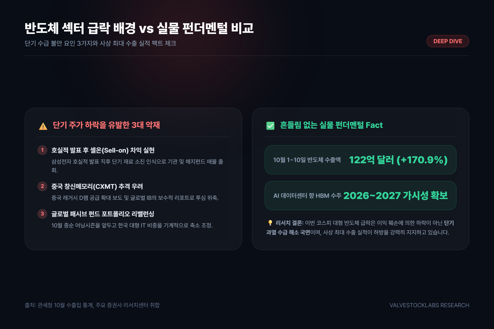
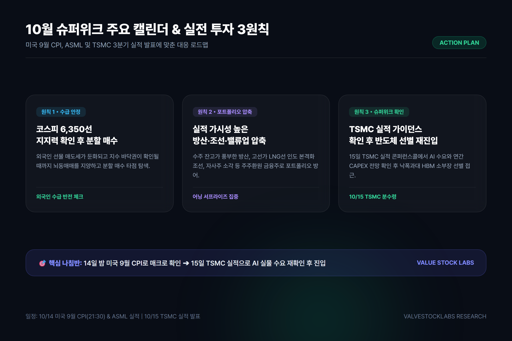

나스닥 종합지수:27,245.90 pt (-0.44%) - 기술주 차익 실현에 따른 소폭 조정
필라델피아반도체 지수:12,236.79 pt (-2.67%) - 엔비디아(-1.29%), 브로드컴(-1.88%) 등 하드웨어 약세
원/달러 환율:1,334.14원 (-0.44%) - 수출 네고 물량 유입으로 하향 안정 유지
뉴욕증시에서는 종목별 차별화가 극명했습니다. 메타(+3.38%), 애플(+1.29%), 마이크로소프트(+1.14%) 등 견고한 현금 흐름을 자랑하는 초대형 플랫폼 빅테크는 상승세를 이어갔으나, 반도체 하드웨어 기업들은 단기 밸류에이션 부담에 따른 숨고르기 양상을 보였습니다.
주목할 점은 원/달러 환율의 흐름입니다. 국내 증시의 급락에도 불구하고 원/달러 환율은 전일 대비 5.86원 하락한 1,334.14원을 기록했습니다. 반도체와 완성차 업계의 대규모 달러 매도(네고) 물량이 지속적으로 유입되며 환율 변동성을 안정적으로 제어하고 있습니다.
3. 반도체 대형주 급락 배경: 셀온(Sell-on)과 실물 펀더멘털 분석
시장 참가자들의 가장 큰 의문은 "사상 최대 실적에도 불구하고 왜 반도체 주가가 급락하는가?"입니다. 이번 조정은 펀더멘털의 훼손이 아닌 복합적인 수급 이슈에서 기인합니다.

▲ [다이어그램] 반도체 급락 3대 원인과 실물 펀더멘털 비교
급락을 유발한 3대 단기 악재
호실적 발표 후 셀온(Sell-on) 현상: 삼성전자의 3분기 잠정 호실적 발표 이후, 단기적으로 추가적인 주가 모멘텀이 부재하다는 인식 속에 국내외 기관의 차익 실현 매물이 집중되었습니다.
중국 창신메모리(CXMT) 추격 우려: 중국 업체의 레거시 D램 공급 확대 소식과 일부 외국계 증권사의 보수적 전망 리포트가 투자 심리를 냉각시켰습니다.
글로벌 패시브 펀드 리밸런싱: 10월 중순 실적 시즌을 앞두고 글로벌 헤지펀드들이 단기 급등했던 한국 IT 반도체 비중을 기계적으로 축소하는 포트폴리오 조정이 진행되었습니다.
💡 팩트 체크: 흔들림 없는 실물 펀더멘털
관세청 10월 1~10일 수출입 속보치에 따르면 반도체 수출액은 122억 달러로 전년 동기 대비 170.9% 폭증했습니다. AI 서버용 HBM3E 및 6세대 HBM4 수주 가시성이 2026~2027년까지 확고한 만큼, 현재의 조정은 구조적 위기가 아닌 건전한 단기 과열 해소 국면입니다.
4. 이번 주 증시 분수령: 미국 9월 CPI와 TSMC 실적 캘린더
이번 주는 10월 증시의 중단기 방향성을 결정짓는 매크로 및 실적의 '슈퍼위크(Super Week)'입니다.
이번 주 핵심 글로벌 증시 캘린더
10월 14일(수) 밤 21:30 [한국시간] - 미국 9월 소비자물가지수(CPI): 미 연방준비제도(Fed)의 향후 금리 인하 경로를 결정지을 핵심 척도입니다. 물가 지표가 시장 예상치에 부합할 경우 11월 FOMC 금리 완화 기대감이 한층 강화될 수 있습니다.
10월 14일(수) 장중 - ASML 3분기 실적 발표: 반도체 장비의 핵심인 EUV 노광장비 신규 수주 잔고 추이를 통해 글로벌 반도체 CAPEX 사이클을 진단할 수 있습니다.
10월 15일(목) 장중 - 대만 TSMC 3분기 실적 발표: 글로벌 파운드리 1위 기업 TSMC는 이미 3분기 잠정 매출 467억 달러(+50% 폭증)로 사상 최대 실적을 예고했습니다. 콘퍼런스콜에서 발표될 연간 설비투자(CAPEX) 가이던스와 AI 칩 수요 지속 여부가 글로벌 반도체주 반등의 열쇠입니다.
10월 15~16일 - 월가 대형 금융주 실적: JP모건, 웰스파고, 블랙록 등의 실적 발표로 미국 3분기 어닝시즌이 본격적으로 막을 올립니다.
5. 투자자 실전 대응 로드맵 3원칙
변동성이 극대화된 국면에서 개인 투자자가 취해야 할 실전 대응 전략은 명확합니다.

▲ [로드맵] 10월 슈퍼위크 캘린더 및 실전 투자 3대 수칙
실전 투자 가이드라인 3대 수칙
코스피 6,350~6,380선 지지력 확인 후 분할 매수: 외국인의 선물 매도세가 둔화되고 지수가 바닥권을 다지는 시점까지는 섣부른 몰빵 매수를 피하고, 분할 매수 관점으로 신중히 접근해야 합니다.
실적 방어주 및 밸류업 종목으로 포트폴리오 압축: 단순 테마주를 지양하고, 수주 잔고가 풍부한 방산주, 고선가 LNG선 인도가 시작된 조선주, 자사주 소각 등 주주환원이 명확한 저PBR 금융주로 하방을 지지해야 합니다.
TSMC 가이던스 확인 후 반도체 재진입: 15일 TSMC의 AI 칩 수요 전망을 확인한 뒤, 낙폭이 과대했던 HBM 밸류체인 소부장 대장주를 선별적으로 공략하는 전략이 유효합니다.
6. 결론 및 요약
📌 오늘의 시황 3줄 핵심 요약
지수 조정: 외국인 2.1조 원 순매도로 코스피는 6,384.24선으로 급락했으나, 원/달러 환율은 1,334원대로 안정세를 유지하고 있습니다.
반도체 진단: 이번 반도체주 약세는 실적 피크아웃이 아닌 단기 셀온(Sell-on)과 리밸런싱에 따른 수급 충격이며, 10월 1~10일 반도체 수출은 170.9% 증가하며 사상 최대치를 경신했습니다.
전략 제언: 14일 미국 CPI와 15일 TSMC 실적 발표 전까지는 보수적으로 지지선을 확인하되, 실적 가시성이 담보된 주도주로 포트폴리오를 압축해 대응하시길 권장합니다.
⚠️ 투자 유의사항 (Disclaimer)
본 글은 신뢰할 수 있는 공개 금융 데이터 및 증권사 리포트를 바탕으로 작성된 시장 분석 정보이며, 특정 종목에 대한 매수 또는 매도 추천이 아닙니다. 모든 투자의 최종 결정과 책임은 투자자 본인에게 있습니다.